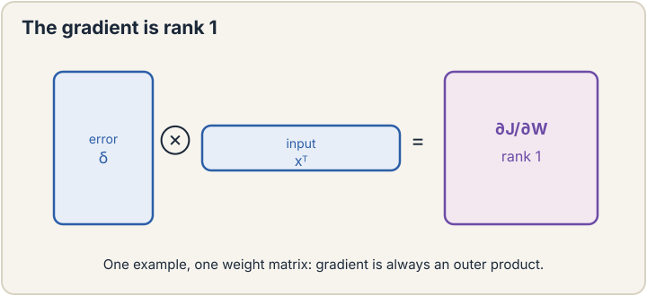

Lecture 8: Neural Networks, Backpropagation
Video blocked (ad-blocker or local file mode).
Watch on YouTubeVideo not loading? Watch on YouTube
Original lecture. Tengyu Ma proves the backprop complexity theorem and derives the module-wise backward functions.
The job: train 10,000 knobs before lunch
Lecture 7 built the MLP. A modest one has 10,000 knobs. Gradient descent needs the gradient: the downhill direction for every knob. The naive way to get it is finite differences: nudge knob 1 a hair, measure how the loss moves, restore. Repeat 10,000 times. Each measurement is a full forward pass. Training one step costs 10,001 forward passes. For a language model with 1 billion knobs, one gradient step costs 1 billion forward passes. The universe ends first.
The key question: can all 10,000 (or 1 billion) derivatives be computed for the price of one forward pass?
First attempt: finite differences
Make it concrete. Loss L(w) = w^2, one knob, w = 3. Finite differences: L(3.001) - L(3) over 0.001 = (9.006 - 9)/0.001 = 6. The true derivative is 6. It works, and it is simple enough to debug anything. Its cost is the killer: n knobs need n+1 forward evaluations per gradient. For the 10,000-knob MLP, each training step pays 10,001 forward passes. Nobody trains this way, but everyone debugs this way: finite differences are the ground truth you check backprop against.
The chain rule, on a toy with real numbers
A network is a chain of simple operations. The chain rule says: if you know how the loss responds to a module’s output, you can compute how it responds to the module’s input, using only local information. Work it on a 2-layer toy, by hand, before any formalism.
forward pass: x = [1, 2] W1 = [[1, -1], [0.5, 0.5]], b1 = [0, 0] z1 = W1 x = [1*1 + (-1)*2, 0.5*1 + 0.5*2] = [-1, 1.5] a1 = ReLU(z1) = [0, 1.5] W2 = [2, -1], b2 = 0 y_hat = W2 a1 = 2*0 + (-1)*1.5 = -1.5 target y = 1 L = (1/2)(y_hat - y)^2 = 0.5 * (-2.5)^2 = 3.125
The prediction is -1.5, the truth is 1, the loss is 3.125. Now walk backward. At each step, ask: “if this intermediate value wiggled a little, how much would the loss move?” Multiply by the local slope to pass the question one step back.
backward pass:
dL/dy_hat = (y_hat - y) = -2.5
"each unit of prediction moves loss by -2.5"
dL/dW2 = dL/dy_hat * a1 = -2.5 * [0, 1.5] = [0, -3.75]
"W2's second knob matters (a1's second entry is live).
Its first knob does not (a1's first entry is 0)"
dL/da1 = W2 * dL/dy_hat = [2, -1] * (-2.5) = [-5, 2.5]
"push a1's entries along W2's direction"
dL/dz1 = dL/da1 * ReLU'(z1) = [-5 * 0, 2.5 * 1] = [0, 2.5]
"ReLU's slope is 0 at z1[0] = -1 (dead), 1 at z1[1] = 1.5 (live)"
dL/dW1 = dL/dz1 outer x = [0, 2.5]^T [1, 2] = [[0, 0], [2.5, 5]]
"each weight's gradient is downstream signal times its input"
Read the result. Every knob’s gradient came from one backward walk, reusing each module’s local slope. The dead ReLU (z1[0] = -1) zeroed a whole row of W1’s gradient: that neuron learns nothing this step, exactly lecture 7’s dying neuron, now visible in the arithmetic. One forward pass, one backward pass, all gradients. No finite differences.
The fundamental theorem
The lecture states it as an informal theorem. A differentiable circuit with N operations computing one real-valued output: the forward pass costs O(N), and the full gradient costs O(N) too. Not O(N^2). Not N forward passes. One constant factor more than the forward pass.
Why it matters: N here counts operations, which for a network is proportional to the parameter count. The gradient for 1 billion knobs costs about as much as 2 or 3 forward passes, not 1 billion. This single fact is what makes training large models possible. The lecture’s phrasing: the gradient is “efficiently computable” at the same scale as the function itself.
The mechanism behind the theorem is modules with backward functions. Each operation (matrix multiply, ReLU, loss) knows two things: how to compute its output from its input (forward), and how to convert “gradient with respect to my output” into “gradient with respect to my input” (backward). Chain the backward functions in reverse order and the gradient pops out. Modern frameworks (PyTorch, JAX) are exactly this: a library of modules, each with a forward and a backward, composed into a graph.

The rank-1 gradient
Look again at dL/dW2 = [0, -3.75]. It equals (dL/dy_hat) * a1: a column vector times a row vector, an outer product. An outer product always has rank 1: every row is a multiple of one vector. The lecture proves this holds for every weight matrix in the network: each gradient dL/dW is rank 1 (for one example).
This is not trivia. It means the gradient’s information is structured: the update to W is “add a multiple of (signal outer input)”. Low-rank structure is what makes some advanced optimizers and compression schemes possible. It also explains a subtle fact: the gradient never has more independent directions than the batch provides. With batch size 1, every weight update is rank 1.

Second order without the matrix
Lecture 3 priced Newton’s method at O(n d^2 + d^3): the Hessian (second-derivative matrix) is d by d, and inverting it is hopeless at scale. The lecture salvages something. You cannot form the Hessian for d = 1 billion (10^18 entries), but you can compute a Hessian-vector product H*v in O(N) time, the same cost as a gradient, using one extra backward pass through the gradient computation.
Why that suffices: many second-order methods never need H itself, only its product with vectors. Conjugate gradient, for example, solves H^-1 g by repeated H*v products. So the door to curvature information is not fully closed at scale. It is open exactly as far as matrix-free methods can walk through. The lecture’s contrast: the matrix is too big to exist, but its action on any vector is cheap.
The honest price
Backprop buys O(N) gradients and pays three prices. First, memory: the backward pass needs the forward pass’s intermediate values (a1, z1), so training stores every layer’s activations. For deep networks this dominates memory, which is why the later lectures obsess over activation checkpointing and KV caches. Second, numerical fragility: the chain multiplies many local slopes, so vanishing and exploding gradients (lecture 7, the RNN lesson) are backprop’s native diseases. Third, the theorem needs differentiability: ReLU’s kink at 0, discrete sampling, and if-statements break the chain, and each needs its own workaround. The gradient is cheap, exact, and partial: it tells you the downhill direction from here, nothing about the landscape beyond.
Mapping back
| Idea | Pain it answers | How |
|---|---|---|
| Chain rule backward walk | Finite differences need n+1 forward passes per gradient | One backward pass reuses local slopes; toy: all gradients from a single reverse walk |
| Fundamental theorem | Gradient cost seemed to scale with knob count | Forward O(N) implies gradient O(N); 1B knobs cost ~2-3 forward passes, not 1B |
| Modules + backward functions | Hand-deriving gradients per architecture | Each op ships forward and backward; frameworks compose them; the graph is the program |
| Rank-1 gradient | Gradient structure was opaque | dL/dW = signal outer input; rank 1 per example; toy W2 gradient [0, -3.75] |
| Hessian-vector products | Newton needs O(d^3); Hessian has 10^18 entries at d=1B | H*v in O(N) via double backward; matrix-free methods keep curvature affordable |
Each module’s backward function converts the gradient at its output to the gradient at its input using only local information: a matrix-vector product shaped like the module itself. Chaining these in reverse visits each module once, so the total work is proportional to the number of operations N, the same as the forward pass. The naive fear was that each of the N knobs needs its own pass. The chain rule shares the work across all knobs in one reverse walk. Every intermediate value the backward functions need: the inputs to each module (a1, z1 in the toy). That is why training memory is dominated by activations, not weights. Forget to save them and you recompute the forward pass: the price of backprop’s speed is memory.
Forward gave y_hat = -1.5, y = 1, L = 3.125. dL/dy_hat = -2.5. dL/dW2 = -2.5 * [0, 1.5] = [0, -3.75]: the first knob gets zero gradient because its input a1[0] = 0. dL/da1 = [2,-1](-2.5) = [-5, 2.5]. dL/dz1 = [-50, 2.5*1] = [0, 2.5]: the dead ReLU at z1[0] = -1 kills that path. dL/dW1 = [0,2.5]^T [1,2] = [[0,0],[2.5,5]]. Every number follows from “downstream signal times local slope”. W1[1,1] with gradient 5: it sits on the live path (a1[1] = 1.5, ReLU slope 1) fed by the largest input (x[1] = 2) with the full downstream signal (2.5). Gradient descent will move it most. The dead neuron’s row stays frozen: zero gradient, zero learning, exactly the dying-ReLU phenomenon.
For one training example, dL/dW = (backward signal) outer (forward input): a column times a row. Every row of that matrix is a multiple of the input vector, so the matrix has rank 1 no matter how big W is. In the toy, dL/dW2 = [0, -3.75] is (-2.5) times [0, 1.5]. Practical meaning: a single example’s update carries one direction of information per layer. The batch size caps the rank of the total update. Forming the Hessian needs d^2 entries and inverting it d^3 work: dead at d = 1B. But Hv, the Hessian’s action on one vector, costs O(N) via an extra backward pass through the gradient graph. Matrix-free methods like conjugate gradient only ever need Hv, so they get curvature information without ever building the matrix. The lecture’s line: the matrix is too big to exist, its action is cheap.
Recap: the whole lesson on one screen
- The job. Gradients for 10,000 knobs before lunch. Finite differences need 10,001 forward passes per step.
- First attempt. Finite differences: correct, simple, dead at scale. Kept only as the debugging ground truth.
- The key question. Can all derivatives cost one forward pass?
- The chain rule, by hand. 2-layer toy: forward gives y_hat = -1.5, L = 3.125. Backward walk: dL/dW2 = [0,-3.75], dL/dW1 = [[0,0],[2.5,5]]. Dead ReLU zeroes a row.
- The theorem. Forward O(N) implies gradient O(N). 1B knobs cost ~2-3 forward passes. This is why large models train.
- Modules. Each op ships forward + backward. Frameworks compose them. The graph is the program.
- Rank 1. dL/dW = signal outer input, per example. Batch size caps update rank.
- Hessian-vector. H*v in O(N). The matrix never exists. Curvature stays affordable for matrix-free methods.
- The honest price. Activation memory, vanishing/exploding chains, differentiability required. Cheap, exact, local.
Official sources and further reading
Official: - Lecture 8 video, Stanford Online YouTube: https://www.youtube.com/watch?v=ne2ngVAoMG8 — Tengyu Ma states the complexity theorem, builds the chain rule via modules and backward functions, and derives the rank-1 gradient and Hessian-vector products. - Official subtitle transcript (en-US): the lecture’s spoken text. - CS229 Spring 2026 official course notes (local PDF): the formal theorem statement and derivations.
Caveats from these sources. The theorem is stated informally in the lecture (“if you really want to make it formal you need a lot of jargon”). The precise circuit model is in the notes. The 2-layer toy in this lesson is an original miniature demonstrating the lecture’s module/backward-function framing with the lecture’s conventions. The “1 billion knobs” scale is the lecture’s motivating regime for the theorem.
Connections to the other courses
- CS229 L02: gradient descent, the consumer of the gradients this lesson produces.
- CS229 L07: the MLP architecture whose knobs backprop trains. The dying ReLU visible in the toy’s arithmetic.
- CS229 L14-L15: backprop at transformer scale: activation memory becomes the KV cache problem.
- CS336: the O(N) theorem in practice: how frameworks implement backward functions on GPUs.
- CS224N: backprop through time: the chain rule unrolled over sequences.
Sources
- VIDEOLecture 8 video, Stanford Online YouTube
- NOTESOfficial subtitle transcript (en-US)
- NOTESCS229 Spring 2026 official course notes (local PDF)